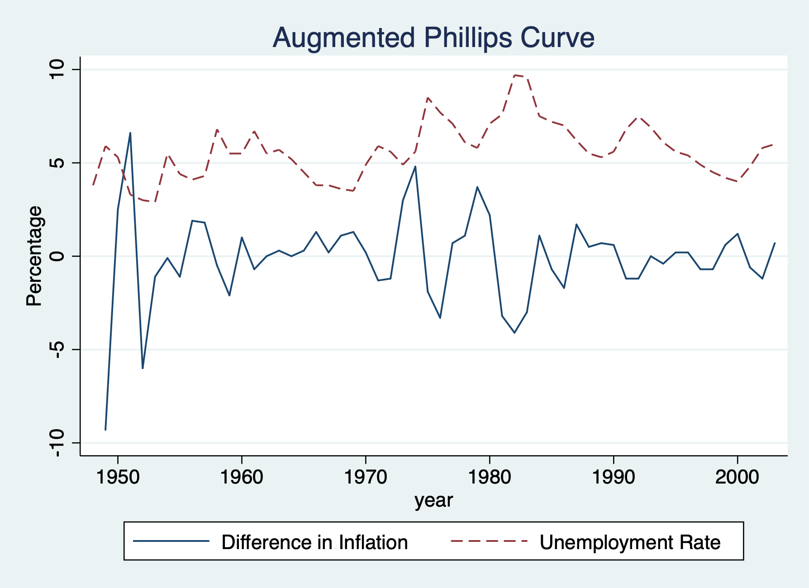

Chapter 5 Weakly Dependent and Stationary Time Series AR(1) Models
5.1 Efficient Market Hypothesis
We’ll test the a version of the efficient market hypothesis (EMH) by looking at weekly stock return from 1976 to 1989.
Set Time Series
/Users/Sam/Desktop/Econ 645/Data/Wooldridge
time variable: t, 1960w2 to 1973w16
delta: 1 weekOur dependent variable is the weekly percentage return on the New York Stock Exchange. A strict form of the EMH states that information observable to the market prior to week t should not help to predict the return during week t. \[ E(y_t|y_{t-1},y_{t-2},...)=E(y_t) \]
We will test EMH by specifying an AR(1) model and our hypothesis states that beta for y_(t-1) will be equal to 0. We’ll assume that stock returns are serially uncorrelated, so we can safetly assume that they are weakly dependent.
\[ return_t = \beta_0 + \rho return_{t-1} + e_t \]
Source | SS df MS Number of obs = 689
-------------+---------------------------------- F(1, 687) = 2.40
Model | 10.6866231 1 10.6866231 Prob > F = 0.1218
Residual | 3059.73817 687 4.45376735 R-squared = 0.0035
-------------+---------------------------------- Adj R-squared = 0.0020
Total | 3070.42479 688 4.46282673 Root MSE = 2.1104
------------------------------------------------------------------------------
return | Coef. Std. Err. t P>|t| [95% Conf. Interval]
-------------+----------------------------------------------------------------
return |
L1. | .0588984 .0380231 1.55 0.122 -.0157569 .1335538
|
_cons | .179634 .0807419 2.22 0.026 .0211034 .3381646
------------------------------------------------------------------------------
Source | SS df MS Number of obs = 689
-------------+---------------------------------- F(1, 687) = 2.40
Model | 10.6866231 1 10.6866231 Prob > F = 0.1218
Residual | 3059.73817 687 4.45376735 R-squared = 0.0035
-------------+---------------------------------- Adj R-squared = 0.0020
Total | 3070.42479 688 4.46282673 Root MSE = 2.1104
------------------------------------------------------------------------------
return | Coef. Std. Err. t P>|t| [95% Conf. Interval]
-------------+----------------------------------------------------------------
return_1 | .0588984 .0380231 1.55 0.122 -.0157569 .1335538
_cons | .179634 .0807419 2.22 0.026 .0211034 .3381646
------------------------------------------------------------------------------
(2 missing values generated)
Source | SS df MS Number of obs = 688
-------------+---------------------------------- F(1, 687) = 0.00
Model | .00603936 1 .00603936 Prob > F = 0.9706
Residual | 3059.08227 687 4.45281262 R-squared = 0.0000
-------------+---------------------------------- Adj R-squared = -0.0015
Total | 3059.08831 688 4.44634929 Root MSE = 2.1102
------------------------------------------------------------------------------
u | Coef. Std. Err. t P>|t| [95% Conf. Interval]
-------------+----------------------------------------------------------------
u |
L1. | .001405 .0381496 0.04 0.971 -.0734987 .0763087
------------------------------------------------------------------------------We cannot reject the null hypothesis under our model, but we do have some evidence of positive serial correlation.
5.2 Expected Augmented Phillips Curve
We’ll revisit the Phillips curve
Set Time Series
/Users/Sam/Desktop/Econ 645/Data/Wooldridge
time variable: year, 1948 to 2003
delta: 1 unitA linear version of the expections augmented Phillips curve can be written as \[ inf_t - inf^e_t=\beta_1(unemp_t-\mu_0) + e_t \]
Where \(mu_0\) is the natural rate of unemployment and inf^e is the expected rate of inflation formed in year t-1. The difference between actual unemployment and the natural rate is called cyclical unemployment, while the difference between inflation and expected inflation is called unanticipated inflation Our e_t is called our supply shock. If there is a trade-off between inflation and unemployment our \(\hat{\beta_1}\) will be negative.
An assumption is made about inflationary expectations and unders adaptive expectations, the expected value of current inflation depends on recently observed inflation. The expected inflation will be assumed to be equal to last years inflation \[ inf_t - inf_{t-1}=\beta_0 + \beta_1 unemp_t + e_t \] \[ \Delta inf_t =\beta_0 + \beta_1 unemp_t + e_t \]
Where \[ \Delta inf_t=inf_t - inf_{t-1} \] \[ \beta_0 = -\beta_1 \mu_0 \] Since beta_1 is expected to be negative and beta_0 is expected to be positive.
Therefore, under adaptive expectations, the augmented Phillips curve relates the change in inflation to the level of unemployment and a supply shock e_t. We’ll assume assumptions TSC.1-TSC.5 hold.
First Difference in the dependent variable or adaptive expectations of inflation.
Source | SS df MS Number of obs = 48
-------------+---------------------------------- F(1, 46) = 5.56
Model | 33.3830007 1 33.3830007 Prob > F = 0.0227
Residual | 276.305134 46 6.00663335 R-squared = 0.1078
-------------+---------------------------------- Adj R-squared = 0.0884
Total | 309.688135 47 6.58910925 Root MSE = 2.4508
------------------------------------------------------------------------------
cinf | Coef. Std. Err. t P>|t| [95% Conf. Interval]
-------------+----------------------------------------------------------------
unem | -.5425869 .2301559 -2.36 0.023 -1.005867 -.079307
_cons | 3.030581 1.37681 2.20 0.033 .2592061 5.801955
------------------------------------------------------------------------------
Source | SS df MS Number of obs = 48
-------------+---------------------------------- F(1, 46) = 5.56
Model | 33.3829996 1 33.3829996 Prob > F = 0.0227
Residual | 276.305138 46 6.00663344 R-squared = 0.1078
-------------+---------------------------------- Adj R-squared = 0.0884
Total | 309.688138 47 6.58910932 Root MSE = 2.4508
------------------------------------------------------------------------------
D.inf | Coef. Std. Err. t P>|t| [95% Conf. Interval]
-------------+----------------------------------------------------------------
unem | -.5425869 .2301559 -2.36 0.023 -1.005867 -.079307
_cons | 3.030581 1.37681 2.20 0.033 .259206 5.801955
------------------------------------------------------------------------------The trade-off between unanticipated inflation and cyclical unemployment is seen in \(\hat{beta_1}\). A 1-point increase in unemployment decreases unanticipated inflation by about .54 points.
We can estimate the natural rate of unemployment by dividing \(\hat{beta_0}\) by negative of \(\hat{beta_1}\)
\[ \mu_{0} = \hat{\beta}_{0} / - \hat{\beta}_{1} \]
5.5852535Plot the graph.
twoway line cinf year || line unem year, lpattern(dash) ///
legend(order(1 "Difference in Inflation" 2 "Unemployment Rate")) ///
title("Augmented Phillips Curve") ytitle(Percentage) xtitle(year)
graph export "week_10_augmented_phillips.png", replace